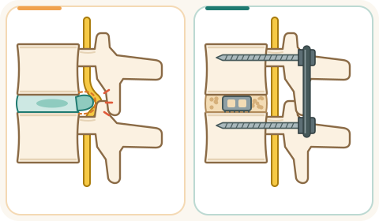

Спондилодез и дискэктомия: что важно знать
Что это за операции
Дискэктомия — удаление части межпозвонкового диска (грыжи), которая давит на нервный корешок. Её часто делают через небольшой разрез (микродискэктомия) или с помощью эндоскопа (AAOS).
Спондилодез — операция, при которой два или несколько позвонков сращивают между собой, чтобы между ними не было движения. Для этого используют костный трансплантат (собственная кость, донорская или синтетический заменитель костного трансплантата), а часто — винты, стержни или пластины, которые держат позвонки, пока кость срастается (AAOS).

Когда их делают
- Большинству людей с грыжей диска становится лучше без операции в течение нескольких недель или месяцев (AAOS). Операцию (декомпрессию) рассматривают при ишиасе, когда лечение без операции не помогло, а снимки соответствуют симптомам (NICE NG59, 1.3.8).
- Новая задержка мочи или невозможность помочиться, недержание мочи или кала, онемение в области половых органов, между ног или вокруг заднего прохода (область «седла») и быстро нарастающая слабость ног могут указывать на сдавление нервных структур. Это неотложное состояние, требующее немедленного обследования в больнице. При быстром ухудшении вызывайте 101. (Источники: AAOS; Guy's and St Thomas' NHS)
- Спондилодез проводят при некоторых заболеваниях позвоночника, когда требуется стабилизировать его сегмент: например, при нестабильности, спондилолистезе, отдельных деформациях или переломах. При неспецифической боли в пояснице без такого хирургического показания NICE не рекомендует спондилодез вне рандомизированного исследования. Решение о необходимости операции принимает хирург после обследования (AAOS; NICE NG59, 1.3.9).
Подготовка
См. памятку «Подготовка к операции»: голодание, лекарства (особенно разжижающие кровь — только по указанию врача), душ. Курение повышает риск того, что кости не срастутся после спондилодеза (AAOS) — обсудите с врачом отказ от курения.
После операции
- После операции персонал поможет вам начать двигаться и ходить, как только это будет безопасно с учётом вашего состояния и вида вмешательства. Сроки, допустимую нагрузку, необходимость корсета и ограничения определяют хирург и реабилитационная команда (NICE NG89; AAOS).
- После операции на позвоночнике профилактику тромбоза подбирают индивидуально, учитывая риск образования тромбов и послеоперационного кровотечения. Могут использоваться механические средства профилактики. Необходимость и время начала препаратов против тромбов определяет врач. Не начинайте такие препараты самостоятельно (NICE NG89).
- Уход за раной — по указаниям при выписке.
Возможные осложнения
- Инфекция операционной раны — возможное осложнение. Профилактические антибиотики вводят перед операцией спондилодеза, если устанавливают импланты. При других операциях на позвоночнике без имплантов необходимость профилактических антибиотиков зависит от вида вмешательства и протокола больницы (NICE NG125).
- Тромбы в венах ног.
- К возможным осложнениям также относятся повреждение нервных структур, кровотечение и подтекание спинномозговой жидкости. Эти осложнения возникают не у каждого пациента (CUH; NHS).
- После спондилодеза: несращение костей (псевдоартроз), чаще у курящих, при диабете и в пожилом возрасте; иногда нужна повторная операция (AAOS).
- После дискэктомии часть межпозвонкового диска остаётся на месте, поэтому в дальнейшем возможно повторное образование грыжи и возвращение симптомов (UCLH).
Когда срочно обращаться за помощью
- При новой или быстро нарастающей слабости ног, онемении в области половых органов, между ног или вокруг заднего прохода (область «седла»), затруднении при начале мочеиспускания или при мочеиспускании, потере обычного ощущения позыва к мочеиспусканию, невозможности помочиться или новой потере контроля над мочевым пузырём или кишечником немедленно обратитесь в приёмный покой. Не садитесь за руль сами. Если не можете безопасно добраться, вызывайте 101 (Маген Давид Адом). При внезапной одышке или боли в груди сразу звоните 101.
- Срочно обратитесь в приёмный покой, если из операционной раны выделяется прозрачная водянистая жидкость, даже без других симптомов, или если появилась новая головная боль, которая усиливается сидя или стоя и уменьшается лёжа. Это могут быть признаки утечки спинномозговой жидкости.
- Температура, покраснение или выделения из раны; боль и отёк в ноге — обратитесь к врачу в тот же день (см. памятку «После операции: тревожные признаки»).
Первые часы после операции: как помочь и не помешать
- Особое время. Первые часы и первые сутки после операции — время, когда за человеком наблюдают особенно внимательно. Чаще всего всё идёт спокойно, но иногда помощь нужна очень быстро. Поэтому проход к пациенту и медицинскому оборудованию всегда должен оставаться свободным.
- Медсестра проверяет. После возвращения в отделение медсестра регулярно проверяет давление, пульс, частоту дыхания, насыщение крови кислородом, температуру и уровень сознания, а также осматривает область операции. В нашем отделении обычно так: сразу при поступлении из операционной, затем через час, ещё через час, затем через два часа, а дальше каждые четыре часа в течение первых суток. При необходимости проверки делают чаще. Это плановое наблюдение и не обязательно означает, что что-то не так. Если назначен эноксапарин (Клексан), после некоторых ортопедических операций в нашем отделении первый послеоперационный укол обычно делают примерно через двенадцать часов. Время определяет врач с учётом остановки кровотечения, вида операции и спинальной или эпидуральной анестезии.
- Свободный проход. Пожалуйста, оставляйте свободный проход к кровати со всех сторон. Не ставьте стулья и сумки вплотную к кровати и в проходе. К пациенту должны быстро подойти медсестра, врач и подъехать тележка с лекарствами и оборудованием.
- Меньше людей — лучше. Лучше, если одновременно рядом с пациентом будет не больше одного-двух близких, если это допускают правила отделения. Когда персонал подходит к пациенту, пожалуйста, освободите место. Если вас попросили выйти из палаты, выполните просьбу. Позже можно уточнить причину и задать вопросы.
- Только с разрешения. После наркоза бывают тошнота и рвота, а ослабленный человек может поперхнуться. После операции не давайте пациенту еду и питьё без разрешения медсестры. Когда пациент достаточно проснулся, может безопасно глотать и нет других ограничений, ему могут разрешить пить и есть. Иногда начинают с небольшого количества воды, затем переходят к еде. Когда и что можно, решает медицинская команда.
- Борта и кнопка. Борта кровати поднимают по решению персонала, с учётом состояния пациента. Они подходят не всем и не заменяют помощь при вставании. Не поднимайте и не опускайте борта самостоятельно. Кнопка вызова должна быть под рукой. Вставайте только с разрешения медицинской команды, первый раз — с помощью персонала.
- Если что-то не так. Если пациента тошнит, ему трудно дышать, он стал необычно сонливым, его трудно разбудить, появилась внезапная спутанность сознания или сильное беспокойство, боль резко усилилась либо повязка быстро пропитывается кровью — немедленно позовите медсестру. Нажмите кнопку вызова, а при тяжёлом состоянии громко зовите персонал. Не давайте самостоятельно еду, питьё или лекарства и не пытайтесь поднимать пациента.
Защита от инфекции в больнице: что могут сделать пациент и близкие
- Чистые руки. Обрабатывайте руки антисептиком или мойте с мылом при входе в палату и выходе из неё, до и после прикосновения к пациенту. После туалета, перед едой и при видимом загрязнении мойте руки водой с мылом. Антисептик обычно есть у входа в палату или у кровати. Можно вежливо попросить персонал обработать руки перед осмотром — это нормально.
- Рана и трубки. Не трогайте рану, повязку, дренаж, катетер и капельницу и не снимайте повязку сами. Если повязка намокла, загрязнилась или сползла, скажите медсестре.
- Чужое не трогать. Не садитесь на чужие кровати, не трогайте оборудование, раны и вещи других пациентов.
- Не заходите в чужие палаты. Без необходимости не ходите по другим палатам и отделениям больницы. Близким с температурой, кашлем, насморком, рвотой или поносом лучше не приходить, пока они не выздоровеют.
- Устойчивые бактерии. Некоторые бактерии устойчивы к антибиотикам. Если у пациента обнаружили такие бактерии, персонал может назначить дополнительные меры защиты: изоляцию, использование халатов и перчаток, особые правила посещения. Конкретные меры зависят от вида бактерии и ситуации. Если персонал сообщил об особых мерах предосторожности, строго выполняйте инструкции — это помогает защищать пациентов и близких.
- Повышенный риск. Особенно внимательно соблюдайте меры профилактики при открытых переломах, значительном повреждении мягких тканей, наружном фиксирующем аппарате (спицы или стержни проходят через кожу в кость), диабете и после сложных или длительных операций. В этих ситуациях риск инфекционных осложнений может быть выше.
- Сразу сообщите медсестре, если: появились температура или озноб; покраснение, усиливающаяся боль, отёк или выделения из раны; покраснение или выделения вокруг мест входа спиц или стержней наружного фиксатора либо вокруг места установки внутривенного катетера.
Источники
- NICE NG59, Low back pain and sciatica, 1.3.8–1.3.9
- AAOS OrthoInfo, Spinal Fusion
- AAOS OrthoInfo, Herniated Disk in the Lower Back
- Guy's and St Thomas' NHS, Recovering from lumbar spine decompression or discectomy
- NICE NG89, Venous thromboembolism in over 16s
- NICE NG125, Surgical site infections: prevention and treatment
- UCLH NHS, Percutaneous endoscopic interlaminar lumbar discectomy
- Cambridge University Hospitals NHS, Post-operative recovery following lumbar decompression
- NHS, Lumbar decompression surgery
- Маген Давид Адом — 101
הסרטון בהכנה ויופיע כאן בקרוב.
מה הניתוחים
כריתת דיסק (דיסקקטומיה) — הסרת חלק מהדיסק הבין־חולייתי (הפריצה) הלוחץ על שורש עצב. לעתים קרובות מבצעים אותה דרך חתך קטן (מיקרודיסקקטומיה) או בעזרת אנדוסקופ (AAOS).
איחוי חוליות (ספונדילודזיס) — ניתוח שבו מחברים שתי חוליות או יותר כך שלא תהיה ביניהן תנועה. משתמשים בשתל עצם (עצם עצמית, עצם מתורם או תחליף עצם סינתטי), ולעתים קרובות בברגים, מוטות או פלטות המחזיקים את החוליות עד שהעצם מתאחה (AAOS).
מתי מבצעים אותם
- רוב האנשים עם פריצת דיסק משתפרים ללא ניתוח תוך מספר שבועות או חודשים (AAOS). ניתוח (שחרור לחץ) נשקל בסיאטיקה כאשר טיפול ללא ניתוח לא עזר והדימות מתאים לתסמינים (NICE NG59, 1.3.8).
- אצירת שתן חדשה או חוסר יכולת להטיל שתן, אי־שליטה על שתן או צואה, חוסר תחושה סביב איברי המין, בין הרגליים או סביב פי הטבעת (אזור האוכף) וחולשה ברגליים שמחמירה במהירות עלולים להעיד על לחץ על מבני עצב. זהו מצב חירום המחייב בדיקה מיידית בבית החולים. אם המצב מחמיר במהירות — הזמינו 101. (מקורות: AAOS; Guy's and St Thomas' NHS)
- איחוי חוליות מבוצע בחלק ממחלות עמוד השדרה, כשצריך לייצב מקטע שלו: למשל בחוסר יציבות, בספונדילוליסתזיס, בעיוותים מסוימים או בשברים. בכאב גב תחתון לא ספציפי ללא התוויה ניתוחית כזו NICE אינו ממליץ על איחוי חוליות מחוץ למחקר אקראי. ההחלטה על הניתוח מתקבלת על ידי המנתח לאחר בירור (AAOS; NICE NG59, 1.3.9).
הכנה
ראו את הדף „הכנה לניתוח”: צום, תרופות (בעיקר מדללי דם — רק לפי הוראת הרופא), מקלחת. עישון מעלה את הסיכון שהעצמות לא יתאחו אחרי איחוי חוליות (AAOS) — שוחחו עם הרופא על הפסקת עישון.
אחרי הניתוח
- אחרי הניתוח הצוות יעזור לכם להתחיל לזוז וללכת ברגע שהדבר בטוח, בהתאם למצבכם ולסוג הניתוח. לוחות הזמנים, העומס המותר, הצורך בחגורת גב וההגבלות נקבעים על ידי המנתח וצוות השיקום (NICE NG89; AAOS).
- אחרי ניתוח בעמוד השדרה מניעת קרישי דם מותאמת אישית, תוך התחשבות בסיכון לקרישים ולדימום אחרי הניתוח. ייתכן שימוש באמצעים מכניים. הצורך בתרופות נגד קרישים ומועד התחלתן נקבעים על ידי הרופא. אל תתחילו תרופות כאלה על דעת עצמכם (NICE NG89).
- טיפול בפצע — לפי הוראות השחרור.
סיבוכים אפשריים
- זיהום בפצע הניתוח הוא סיבוך אפשרי. אנטיביוטיקה מונעת ניתנת לפני ניתוח איחוי חוליות כאשר מושתלים שתלים. בניתוחים אחרים בעמוד השדרה ללא שתלים, הצורך באנטיביוטיקה מונעת תלוי בסוג הפעולה ובנוהל בית החולים (NICE NG125).
- קרישי דם בוורידי הרגליים.
- סיבוכים אפשריים נוספים: פגיעה במבני עצב, דימום ודליפה של נוזל השדרה. סיבוכים אלה אינם מופיעים אצל כל מטופל (CUH; NHS).
- אחרי איחוי חוליות: אי־איחוי של העצמות (פסאודוארתרוזיס), שכיח יותר אצל מעשנים, בסוכרת ובגיל מבוגר; לעתים נדרש ניתוח נוסף (AAOS).
- אחרי כריתת דיסק חלק מהדיסק נשאר במקומו, ולכן בהמשך ייתכן שהפריצה תחזור והתסמינים ישובו (UCLH).
מתי לפנות לעזרה בדחיפות
- בחולשה חדשה או מחמירה במהירות ברגליים, חוסר תחושה סביב איברי המין, בין הרגליים או סביב פי הטבעת (אזור האוכף), קושי להתחיל להטיל שתן או קושי בהטלת שתן, אובדן התחושה הרגילה של צורך להטיל שתן, חוסר יכולת להטיל שתן או אובדן שליטה חדש על שלפוחית השתן או על המעיים — פנו מיד למיון. אל תנהגו בעצמכם. אם אינכם יכולים להגיע בבטחה — התקשרו ל־101 (מגן דוד אדום). בקוצר נשימה פתאומי או כאב בחזה התקשרו מיד ל־101.
- פנו בדחיפות למיון אם יוצא מפצע הניתוח נוזל שקוף ומימי, גם ללא תסמינים אחרים, או אם הופיע כאב ראש חדש שמחמיר בישיבה או בעמידה ומשתפר בשכיבה. אלה עלולים להיות סימנים לדליפת נוזל מוחי־שדרתי.
- חום, אודם או הפרשה מהפצע; כאב ונפיחות ברגל — פנו לרופא באותו יום (ראו „אחרי הניתוח: סימני אזהרה”).
השעות הראשונות אחרי הניתוח: איך לעזור ולא להפריע
- זמן מיוחד. השעות הראשונות והיממה הראשונה אחרי ניתוח הן זמן שבו עוקבים אחרי המטופל בתשומת לב מיוחדת. ברוב המקרים הכול עובר בשקט, אבל לפעמים צריך עזרה מהר מאוד. לכן הדרך אל המטופל ואל הציוד הרפואי צריכה להישאר פנויה תמיד.
- האחות בודקת. אחרי החזרה למחלקה, האחות בודקת באופן קבוע לחץ דם, דופק, קצב נשימה, ריווי חמצן בדם, חום ורמת הכרה, ובודקת גם את אזור הניתוח. במחלקה שלנו בדרך כלל כך: מיד בקבלה מחדר הניתוח, אחר כך אחרי שעה, אחרי עוד שעה, אחר כך אחרי שעתיים, ומשם כל ארבע שעות במשך היממה הראשונה. בעת הצורך בודקים לעיתים קרובות יותר. זה מעקב מתוכנן, והוא לא בהכרח אומר שמשהו לא בסדר. אם נרשם אנוקספרין, קלקסן, אחרי חלק מהניתוחים האורתופדיים במחלקה שלנו הזריקה הראשונה שלאחר הניתוח ניתנת בדרך כלל כשתים עשרה שעות אחרי הניתוח. הרופא קובע את המועד לפי מצב הדימום, סוג הניתוח וההרדמה הספינלית או האפידורלית.
- מעבר פנוי. בבקשה, השאירו מעבר פנוי למיטה מכל הצדדים. אל תעמידו כיסאות ותיקים צמוד למיטה ובמעבר. האחות והרופא צריכים להגיע מהר אל המטופל, ועגלת התרופות והציוד צריכה להגיע עד אליו.
- פחות אנשים, יותר טוב. עדיף שליד המטופל יהיו בו זמנית לא יותר מאחד או שניים מבני המשפחה, אם נהלי המחלקה מאפשרים זאת. כשהצוות ניגש למטופל, בבקשה פנו מקום. אם ביקשו מכם לצאת מהחדר, עשו זאת. אחר כך אפשר לשאול על הסיבה ולשאול שאלות.
- רק באישור. אחרי הרדמה יכולות להיות בחילה והקאה, ואדם חלש עלול להיחנק. אחרי ניתוח אל תתנו למטופל אוכל ושתייה בלי אישור של האחות. כשהמטופל ער מספיק, יכול לבלוע בבטחה ואין הגבלות אחרות, ירשו לו לשתות ולאכול. לפעמים מתחילים בכמות קטנה של מים ואחר כך עוברים לאוכל. מתי ומה מותר, הצוות הרפואי מחליט.
- מעקות וכפתור. את מעקות המיטה מרימים לפי החלטת הצוות, בהתאם למצב המטופל. הם לא מתאימים לכולם ולא מחליפים עזרה בקימה. אל תרימו ואל תורידו את המעקות בעצמכם. כפתור הקריאה צריך להיות בהישג יד. קמים רק באישור הצוות הרפואי, ובפעם הראשונה בעזרת הצוות.
- אם משהו לא בסדר. אם למטופל יש בחילה, קשה לו לנשום, הוא ישנוני באופן חריג, קשה להעיר אותו, הופיע בלבול פתאומי או אי שקט חזק, הכאב התגבר מאוד, או שהחבישה נספגת בדם במהירות, קראו מיד לאחות. לחצו על כפתור הקריאה, ובמצב קשה קראו לצוות בקול רם. אל תתנו בעצמכם אוכל, שתייה או תרופות, ואל תנסו להרים את המטופל.
מניעת זיהומים בבית החולים: מה יכולים לעשות המטופל והמשפחה
- ידיים נקיות. חטאו ידיים בתכשיר לחיטוי ידיים או רחצו אותן במים וסבון בכניסה לחדר וביציאה ממנו, לפני ואחרי מגע במטופל. אחרי השירותים, לפני האוכל וכשהידיים מלוכלכות באופן נראה לעין, רחצו ידיים במים וסבון. תכשיר לחיטוי ידיים נמצא בדרך כלל בכניסה לחדר או ליד המיטה. אפשר לבקש בנימוס מהצוות לחטא ידיים לפני הבדיקה.
- פצע וצינורות. אל תגעו בפצע, בחבישה, בנקז, בקטטר ובעירוי, ואל תסירו את החבישה בעצמכם. אם החבישה נרטבה, התלכלכה או זזה, ספרו לאחות.
- לא לגעת בשל אחרים. אל תשבו על מיטות של מטופלים אחרים, ואל תגעו בציוד, בפצעים ובחפצים שלהם.
- לא להיכנס לחדרי מטופלים אחרים. אל תסתובבו ללא צורך בחדרים ובמחלקות אחרות בבית החולים. בני משפחה עם חום, שיעול, נזלת, הקאות או שלשול, עדיף שלא יבואו לבקר עד שיחלימו.
- חיידקים עמידים. יש חיידקים שעמידים לאנטיביוטיקה. אם נמצאו חיידקים כאלה אצל המטופל, הצוות עשוי להורות על אמצעי זהירות נוספים: בידוד, שימוש בחלוקים ובכפפות וכללים מיוחדים לביקורים. האמצעים נקבעים לפי סוג החיידק והמצב. אם הצוות הודיע על הנחיות מיוחדות, הקפידו לפעול לפיהן כדי להגן על המטופלים ועל בני המשפחה.
- סיכון מוגבר. חשוב במיוחד להקפיד על מניעת זיהומים בשברים פתוחים, בפגיעה משמעותית ברקמות הרכות, בקיבוע חיצוני (פינים או חוטי מתכת שעוברים דרך העור אל העצם), בסוכרת ואחרי ניתוחים מורכבים או ממושכים. במצבים אלה הסיכון לסיבוכים זיהומיים עלול להיות גבוה יותר.
- דווחו מיד לאחות אם: הופיעו חום או צמרמורת; אודם, כאב שמתגבר, נפיחות או הפרשה מהפצע; אודם או הפרשה סביב מקומות כניסת הפינים או חוטי המתכת של הקיבוע החיצוני, או סביב מקום כניסת העירוי לווריד.
מקורות
- NICE NG59, Low back pain and sciatica, 1.3.8–1.3.9
- AAOS OrthoInfo, Spinal Fusion
- AAOS OrthoInfo, Herniated Disk in the Lower Back
- Guy's and St Thomas' NHS, Recovering from lumbar spine decompression or discectomy
- NICE NG89, Venous thromboembolism in over 16s
- NICE NG125, Surgical site infections: prevention and treatment
- UCLH NHS, Percutaneous endoscopic interlaminar lumbar discectomy
- Cambridge University Hospitals NHS, Post-operative recovery following lumbar decompression
- NHS, Lumbar decompression surgery
- מגן דוד אדום — 101
الفيديو قيد الإعداد وسيظهر هنا قريبًا.
ما هي هذه العمليات
استئصال القرص — إزالة جزء من القرص بين الفقرات (الانفتاق) الذي يضغط على جذر عصبي. غالبًا ما تُجرى عبر شق صغير (استئصال القرص المجهري) أو بمساعدة منظار (AAOS).
دمج الفقرات — عملية تُلحَم فيها فقرتان أو أكثر معًا كي لا تتحرك بينها. يُستخدم طُعم عظمي (عظم المريض نفسه أو عظم متبرَّع به أو بديل صناعي للطُعم العظمي)، وغالبًا براغٍ أو قضبان أو صفائح تثبّت الفقرات حتى يلتحم العظم (AAOS).
متى تُجرى
- معظم المصابين بانفتاق القرص يتحسنون دون جراحة خلال أسابيع أو أشهر (AAOS). يُنظر في الجراحة (تخفيف الضغط) لعرق النسا عندما لا يفيد العلاج غير الجراحي وتتوافق الصور مع الأعراض (NICE NG59، 1.3.8).
- احتباس البول الجديد أو عدم القدرة على التبول، وسلس البول أو البراز، والخدر حول الأعضاء التناسلية أو بين الفخذين أو حول فتحة الشرج (منطقة السرج)، والضعف المتزايد بسرعة في الساقين قد تدل على انضغاط البنى العصبية. هذه حالة طارئة تتطلب فحصًا فوريًا في المستشفى. عند التدهور السريع اطلبوا 101. (المصادر: AAOS؛ Guy's and St Thomas' NHS)
- يُجرى دمج الفقرات في بعض أمراض العمود الفقري عندما يلزم تثبيت أحد أجزائه: مثل عدم الثبات، أو انزلاق الفقار، أو بعض التشوهات أو الكسور. في ألم أسفل الظهر غير المحدد من دون داعٍ جراحي كهذا لا توصي NICE بدمج الفقرات خارج دراسة عشوائية. يقرر الجرّاح الحاجة إلى العملية بعد الفحص (AAOS؛ NICE NG59، 1.3.9).
التحضير
راجعوا نشرة «التحضير للعملية»: الصيام، الأدوية (خاصة مميّعات الدم — فقط حسب تعليمات الطبيب)، الاستحمام. التدخين يزيد خطر عدم التحام العظام بعد دمج الفقرات (AAOS) — ناقشوا مع الطبيب الإقلاع عن التدخين.
بعد العملية
- بعد العملية سيساعدكم الطاقم على البدء بالحركة والمشي حالما يكون ذلك آمنًا بحسب حالتكم ونوع العملية. التوقيت والحمل المسموح والحاجة إلى مشدّ والقيود يحددها الجرّاح وفريق التأهيل (NICE NG89؛ AAOS).
- بعد عملية العمود الفقري تُختار الوقاية من الجلطات بشكل فردي، مع مراعاة خطر الجلطات والنزيف بعد العملية. قد تُستخدم وسائل وقاية ميكانيكية. الحاجة إلى أدوية منع الجلطات وموعد بدئها يحددهما الطبيب. لا تبدؤوا هذه الأدوية من تلقاء أنفسكم (NICE NG89).
- العناية بالجرح — حسب تعليمات الخروج.
المضاعفات المحتملة
- عدوى جرح العملية من المضاعفات المحتملة. تُعطى المضادات الحيوية الوقائية قبل عملية دمج الفقرات عند تركيب غرسات. وفي عمليات العمود الفقري الأخرى دون غرسات، تعتمد الحاجة إلى المضادات الحيوية الوقائية على نوع الإجراء وبروتوكول المستشفى (NICE NG125).
- جلطات في أوردة الساقين.
- من المضاعفات المحتملة أيضًا إصابة البنى العصبية والنزيف وتسرب السائل الدماغي الشوكي. لا تحدث هذه المضاعفات لكل مريض (CUH؛ NHS).
- بعد دمج الفقرات: عدم التحام العظام (المفصل الكاذب)، أكثر شيوعًا لدى المدخنين ومرضى السكري وكبار السن؛ قد تلزم عملية أخرى (AAOS).
- بعد استئصال القرص يبقى جزء من القرص في مكانه، لذلك قد يتكرر الانفتاق لاحقًا وتعود الأعراض (UCLH).
متى تطلبون المساعدة بشكل عاجل
- عند الضعف الجديد أو المتزايد بسرعة في الساقين، أو الخدر حول الأعضاء التناسلية أو بين الفخذين أو حول فتحة الشرج (منطقة السرج)، أو صعوبة في بدء التبول أو في إخراج البول، أو فقدان الإحساس المعتاد بالحاجة إلى التبول، أو عدم القدرة على التبول، أو فقدان جديد للتحكم بالمثانة أو الأمعاء — توجهوا فورًا إلى الطوارئ. لا تقودوا السيارة بأنفسكم. إذا لم تتمكنوا من الوصول بأمان — اتصلوا بالرقم 101 (نجمة داود الحمراء). عند ضيق النفس المفاجئ أو ألم الصدر اتصلوا فورًا بـ 101.
- توجهوا بسرعة إلى الطوارئ إذا خرج من جرح العملية سائل شفاف مائي، حتى دون أعراض أخرى، أو إذا ظهر صداع جديد يزداد عند الجلوس أو الوقوف ويخف عند الاستلقاء. قد تكون هذه علامات على تسرّب السائل الدماغي الشوكي.
- حرارة أو احمرار أو إفرازات من الجرح؛ ألم وتورم في الساق — راجعوا الطبيب في اليوم نفسه (انظروا «بعد العملية: علامات الخطر»).
الساعات الأولى بعد العملية: كيف تساعدون ولا تعيقون
- وقت خاص. الساعات الأولى واليوم الأول بعد العملية وقت يُراقَب فيه المريض باهتمام خاص. في معظم الحالات يمرّ كل شيء بهدوء، لكن أحيانًا تكون المساعدة مطلوبة بسرعة كبيرة. لذلك يجب أن يبقى الطريق إلى المريض وإلى المعدّات الطبية مفتوحًا دائمًا.
- الممرضة تفحص. بعد العودة إلى القسم، تفحص الممرضة بانتظام ضغط الدم، والنبض، ومعدّل التنفّس، ونسبة الأكسجين في الدم، والحرارة، ومستوى الوعي، وتفحص أيضًا منطقة العملية. في قسمنا يكون ذلك عادةً: فور الوصول من غرفة العمليات، ثم بعد ساعة، ثم بعد ساعة أخرى، ثم بعد ساعتين، وبعد ذلك كل أربع ساعات خلال اليوم الأول. وعند الحاجة تُجرى الفحوص بشكل أكثر تكرارًا. هذه متابعة مخطّطة، ولا تعني بالضرورة أن هناك مشكلة. إذا وُصف الإينوكسابارين، كليكسان، فبعد بعض عمليات العظام في قسمنا تُعطى أول حقنة بعد العملية عادةً بعد نحو اثنتي عشرة ساعة. يحدّد الطبيب الموعد بحسب السيطرة على النزيف، ونوع العملية، والتخدير النخاعي أو فوق الجافية.
- ممرّ مفتوح. من فضلكم، اتركوا ممرًّا مفتوحًا إلى السرير من كل الجهات. لا تضعوا الكراسي والحقائب ملاصقة للسرير أو في الممر. يجب أن تصل الممرضة والطبيب بسرعة إلى المريض، وأن تصل إليه عربة الأدوية والمعدّات.
- أشخاص أقل، أفضل. من الأفضل ألا يكون بجانب المريض في الوقت نفسه أكثر من شخص أو شخصين من الأقارب، إذا سمحت أنظمة القسم بذلك. عندما يقترب الطاقم من المريض، أفسحوا المكان من فضلكم. وإذا طُلب منكم الخروج من الغرفة، فنفّذوا الطلب. ويمكنكم لاحقًا السؤال عن السبب وطرح الأسئلة.
- فقط بإذن. بعد التخدير قد يحدث غثيان وقيء، وقد يختنق الشخص الضعيف. بعد العملية لا تعطوا المريض طعامًا أو شرابًا دون إذن الممرضة. عندما يستيقظ المريض بما يكفي، ويستطيع البلع بأمان، ولا توجد قيود أخرى، قد يُسمح له بالشرب والأكل. وأحيانًا يبدأون بكمية قليلة من الماء ثم ينتقلون إلى الطعام. متى وماذا يُسمح، يقرّر الفريق الطبي.
- الحواجز والزر. تُرفع حواجز السرير بقرار من الطاقم، حسب حالة المريض. وهي لا تناسب الجميع ولا تغني عن المساعدة عند النهوض. لا ترفعوا الحواجز ولا تخفضوها بأنفسكم. يجب أن يكون زر الاستدعاء في متناول اليد. لا تنهضوا إلا بإذن الفريق الطبي، وفي المرة الأولى بمساعدة الطاقم.
- إذا حدث خطب ما. إذا شعر المريض بالغثيان، أو صعب عليه التنفّس، أو أصبح نعسانًا بشكل غير معتاد، أو صعب إيقاظه، أو ظهر عليه تشوّش مفاجئ أو هياج شديد، أو اشتدّ الألم كثيرًا، أو تشرّبت الضمادة بالدم بسرعة، فنادوا الممرضة فورًا. اضغطوا زر الاستدعاء، وفي الحالة الصعبة نادوا الطاقم بصوت عالٍ. لا تعطوا بأنفسكم طعامًا أو شرابًا أو أدوية، ولا تحاولوا رفع المريض.
الوقاية من العدوى في المستشفى: ما يمكن أن يفعله المريض وأهله
- أيدٍ نظيفة. عقّموا أيديكم بمعقّم اليدين أو اغسلوها بالماء والصابون عند دخول الغرفة والخروج منها، وقبل لمس المريض وبعده. بعد استعمال المرحاض، وقبل الأكل، وعندما تكون الأيدي متّسخة بشكل ظاهر، اغسلوها بالماء والصابون. يوجد معقّم اليدين عادةً عند مدخل الغرفة أو بجانب السرير. يمكنكم أن تطلبوا بلطف من الطاقم تعقيم أيديهم قبل الفحص.
- الجرح والأنابيب. لا تلمسوا الجرح أو الضمادة أو أنبوب التصريف أو القسطرة أو أنبوب التسريب الوريدي، ولا تنزعوا الضمادة بأنفسكم. إذا تبلّلت الضمادة أو اتّسخت أو تحرّكت من مكانها، أخبروا الممرضة.
- لا تلمسوا ما يخصّ غيركم. لا تجلسوا على أسرّة المرضى الآخرين، ولا تلمسوا أجهزتهم أو جروحهم أو أغراضهم.
- لا تدخلوا غرف المرضى الآخرين. لا تتجوّلوا دون حاجة في الغرف والأقسام الأخرى في المستشفى. من الأفضل ألّا يزور المريضَ أقاربُ عندهم حرارة أو سعال أو رشح أو تقيّؤ أو إسهال حتى يتعافوا.
- بكتيريا مقاومة. بعض البكتيريا مقاومة للمضادات الحيوية. إذا اكتُشفت هذه البكتيريا لدى المريض، فقد يفرض الطاقم إجراءات وقاية إضافية، مثل العزل واستخدام الأردية والقفازات وقواعد خاصة للزيارات. تعتمد الإجراءات على نوع البكتيريا والحالة. إذا أبلغكم الطاقم بتعليمات خاصة، فالتزموا بها لحماية المرضى وأفراد العائلة.
- خطر أعلى. من المهم الالتزام بشكل خاص بإجراءات الوقاية عند وجود كسور مفتوحة، أو إصابة شديدة في الأنسجة الرخوة، أو مثبّت خارجي (أسلاك أو مسامير تثبيت تمرّ عبر الجلد إلى العظم)، أو مرض السكري، أو بعد عمليات معقّدة أو طويلة. في هذه الحالات قد يكون خطر المضاعفات الناتجة عن العدوى أعلى.
- أبلغوا الممرضة فورًا إذا: ظهرت حرارة أو قشعريرة؛ احمرار أو ألم يزداد أو تورّم أو إفرازات من الجرح؛ احمرار أو إفرازات حول مواضع دخول أسلاك أو مسامير المثبّت الخارجي عبر الجلد، أو حول موضع القسطرة الوريدية.
المصادر
- NICE NG59, Low back pain and sciatica, 1.3.8–1.3.9
- AAOS OrthoInfo, Spinal Fusion
- AAOS OrthoInfo, Herniated Disk in the Lower Back
- Guy's and St Thomas' NHS, Recovering from lumbar spine decompression or discectomy
- NICE NG89, Venous thromboembolism in over 16s
- NICE NG125, Surgical site infections: prevention and treatment
- UCLH NHS, Percutaneous endoscopic interlaminar lumbar discectomy
- Cambridge University Hospitals NHS, Post-operative recovery following lumbar decompression
- NHS, Lumbar decompression surgery
- نجمة داود الحمراء — 101
Video in development — it will appear here soon.
What these operations are
Discectomy is removal of part of an intervertebral disc (a herniation) that presses on a nerve root. It is often done through a small incision (microdiscectomy) or with an endoscope (AAOS).
Spinal fusion is an operation in which two or more vertebrae are joined together so that there is no movement between them. A bone graft is used for this (your own bone, donor bone, or a synthetic bone-graft substitute), and often also screws, rods, or plates that hold the vertebrae while the bone heals together (AAOS).
When they are done
- Most people with a herniated disc get better without surgery within several weeks or months (AAOS). Surgery (decompression) is considered for sciatica when treatment without surgery has not helped and the images match the symptoms (NICE NG59, 1.3.8).
- New inability to urinate or trouble passing urine, loss of control over urine or stool, numbness around the genitals, between the legs, or around the anus (saddle area), and rapidly worsening leg weakness can point to compression of nerve structures. This is an emergency that needs immediate evaluation in a hospital. If you get worse quickly, call 101. (Sources: AAOS; Guy's and St Thomas' NHS)
- Spinal fusion is done for some spine conditions when a segment of the spine needs to be stabilized: for example, instability, spondylolisthesis, certain deformities, or fractures. For non-specific low back pain without such a surgical indication, NICE does not recommend spinal fusion outside a randomized trial. The surgeon decides after your examination whether the operation is needed (AAOS; NICE NG59, 1.3.9).
Preparation
See the leaflet "Preparing for Surgery": fasting, medicines (especially blood thinners - only as your doctor tells you), showering. Smoking raises the risk that the bones will not fuse after spinal fusion (AAOS) - talk with your doctor about quitting smoking.
After surgery
- After surgery, the staff will help you start moving and walking as soon as it is safe, given your condition and the type of operation. The surgeon and the rehabilitation team decide the timing, how much weight and activity are allowed, whether you need a brace, and any restrictions (NICE NG89; AAOS).
- After spine surgery, prevention of blood clots is chosen individually, taking into account the risk of clots forming and of bleeding after surgery. Mechanical prevention methods may be used. Your doctor decides whether and when to start medicines against clots. Do not start such medicines on your own (NICE NG89).
- Wound care - follow the instructions you get at discharge.
Possible complications
- Infection of the surgical wound is a possible complication. Preventive antibiotics are given before spinal fusion surgery when implants are placed. For other spine operations without implants, the need for preventive antibiotics depends on the type of procedure and the hospital protocol (NICE NG125).
- Blood clots in the leg veins.
- Possible complications also include injury to nerve structures, bleeding, and leakage of spinal fluid. These complications do not happen to every patient (CUH; NHS).
- After spinal fusion: the bones may not fuse (pseudarthrosis), more often in smokers, with diabetes, and in older age; sometimes a repeat operation is needed (AAOS).
- After discectomy, part of the intervertebral disc stays in place, so the herniation may form again later and symptoms may return (UCLH).
When to get urgent help
- If you have new or rapidly worsening leg weakness, numbness around the genitals, between the legs, or around the anus (saddle area), difficulty starting or passing urine, loss of the usual feeling that you need to urinate, inability to urinate, or new loss of bladder or bowel control, go to the emergency department (ER) immediately. Do not drive yourself. If you cannot get there safely, call 101 (Magen David Adom). If you have sudden shortness of breath or chest pain, call 101 immediately.
- Go to the emergency department (ER) urgently if clear, watery fluid leaks from your surgical wound, even without other symptoms, or if you develop a new headache that gets worse when sitting or standing and improves when lying down. These may be signs of a spinal fluid leak.
- Fever, redness, or discharge from the wound; pain and swelling in the leg - see a doctor the same day (see the leaflet "After surgery: warning signs").
The first hours after surgery: how to help without getting in the way
- A special time. The first hours and the first day after surgery are a time when the patient is watched especially closely. Most of the time everything goes calmly, but sometimes help is needed very quickly. That is why the way to the patient and to the medical equipment must always stay clear.
- The nurse checks. After returning to the ward, the nurse regularly checks blood pressure, pulse, breathing rate, blood oxygen level, temperature and level of consciousness, and also examines the surgical site. On our ward this is usually done on arrival from the operating theatre, then after one hour, after another hour, then after two hours, and then every four hours for the first day. Checks are done more often if needed. This is planned monitoring and does not necessarily mean that something is wrong. If enoxaparin (Clexane) is prescribed, the first postoperative injection on our ward is usually given about twelve hours after certain orthopaedic operations. The doctor decides the timing based on whether surgical bleeding is controlled, the type of operation, and any spinal or epidural anaesthesia.
- A clear path. Please leave a clear path to the bed on all sides. Do not put chairs or bags right next to the bed or in the way. The nurse and doctor must be able to reach the patient quickly, and the trolley with medicines and equipment must be able to get through.
- Fewer people is better. It is best if no more than one or two relatives are with the patient at the same time, if the ward rules allow it. When the staff come to the patient, please make room. If you are asked to leave the room, please do so. You can ask about the reason and ask questions later.
- Only with permission. After anaesthesia there can be nausea and vomiting, and a weak person may choke. After surgery, do not give the patient food or drink without the nurse’s permission. When the patient is awake enough, can swallow safely and there are no other restrictions, they may be allowed to drink and eat. Sometimes they start with a small amount of water and then move on to food. When and what is allowed is decided by the medical team.
- Rails and the button. Bed rails are raised when the staff decide, depending on the patient’s condition. They are not suitable for everyone and do not replace help with getting up. Do not raise or lower the rails yourself. The call button should be within reach. Get up only with the medical team’s permission, and the first time with the staff’s help.
- If something is wrong. If the patient feels sick, finds it hard to breathe, becomes unusually drowsy or hard to wake, suddenly becomes confused or very restless, the pain gets much worse, or the dressing quickly soaks with blood, call the nurse at once. Press the call button, and if the situation is serious, call the staff loudly. Do not give food, drink or medicines yourself, and do not try to lift the patient.
Preventing infection in hospital: what patients and families can do
- Clean hands. Clean your hands with hand sanitiser or soap and water when entering and leaving the room, and before and after touching the patient. Wash your hands with soap and water after using the toilet, before eating and whenever your hands are visibly dirty. Hand sanitiser is usually by the room entrance or next to the bed. You may politely ask staff to clean their hands before an examination.
- Wound and tubes. Do not touch the wound, dressing, drain, catheter or IV line, and do not remove the dressing yourself. If the dressing gets wet, dirty or slips, tell the nurse.
- Leave others' things alone. Do not sit on other patients' beds, and do not touch their equipment, wounds or belongings.
- Avoid other patients' rooms. Do not walk around other rooms and wards of the hospital without need. Relatives with fever, cough, runny nose, vomiting or diarrhoea should not visit until they have recovered.
- Resistant bacteria. Some bacteria are resistant to antibiotics. If these bacteria are found in a patient, staff may introduce additional precautions, such as isolation, gowns and gloves, or special visiting rules. The measures depend on the type of bacteria and the situation. If staff give you special precautions, follow them carefully to help protect patients and families.
- Higher risk. Take extra care to prevent infection with open fractures, significant soft tissue injuries, external fixators (pins or wires pass through the skin into the bone), diabetes, and after complex or prolonged operations. The risk of infectious complications may be higher in these situations.
- Tell the nurse straight away if: there is fever or chills; redness, increasing pain, swelling or discharge from the wound; redness or discharge around the external fixator pin or wire sites, or around the IV catheter site.
Sources
- NICE NG59, Low back pain and sciatica, 1.3.8–1.3.9
- AAOS OrthoInfo, Spinal Fusion
- AAOS OrthoInfo, Herniated Disk in the Lower Back
- Guy's and St Thomas' NHS, Recovering from lumbar spine decompression or discectomy
- NICE NG89, Venous thromboembolism in over 16s
- NICE NG125, Surgical site infections: prevention and treatment
- UCLH NHS, Percutaneous endoscopic interlaminar lumbar discectomy
- Cambridge University Hospitals NHS, Post-operative recovery following lumbar decompression
- NHS, Lumbar decompression surgery
- Magen David Adom — 101